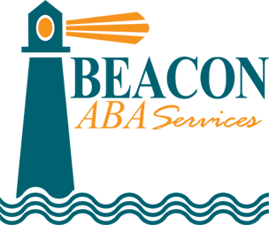
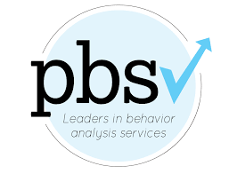

<!DOCTYPE html>
<html lang="en">
    <head>
        <meta charset="utf-8">
        <meta name="description" content="A new generation of electronic interventions backed by science, beginning with video game therapy for children on the autism spectrum.">
        <meta name="keywords" content="BioStream, autism, Technologies, tech, therapy, therapist, help, electronic, videogame, game, children">
        <meta name="author" content="BioStream Technologies">
        <meta name="viewport" content="width=device-width, initial-scale=1.0">
        <link rel="icon" href="assets/LogoBall.png" type="image/x-icon">
        <title>BioStream Technologies</title>
        <link rel="stylesheet" href="css/styles.css">
        <link rel="preconnect" href="https://fonts.googleapis.com">
        <link rel="preconnect" href="https://fonts.gstatic.com" crossorigin>
        <link href="https://fonts.googleapis.com/css2?family=Poppins:wght@300&family=Raleway:wght@300&display=swap" rel="stylesheet">
    </head>
</html>
<body>
    <nav>
        <a href="/index.html"></a>
        <ul class="nav-links">
            <li><a href="index.html" class="nav-link">Home</a></li>
            <li><a href="#about" class="nav-link">About</a></li>
            <li><a href="team/team.html" class="nav-link">Team</a></li>
            <li><a href="#contact" class="nav-link">Contact</a></li>
        </ul>
    </nav>

    <div class="section-container">
        <div class="text-container">
            <h1>BioStream Technologies</h1>
            <h5>Revolutionizing the way therapists & teachers help children live well with autism.</h5>
        </div>
    </div>

    <div id="about" class="accordion-container">
        <div class="accordion-buttons">
            <button class="accordion-button" onclick="toggleAccordion(1)">Our Vision</button>
            <button class="accordion-button" onclick="toggleAccordion(2)">Our focus</button>
            <button class="accordion-button" onclick="toggleAccordion(3)">Our product</button>
            <button class="accordion-button" onclick="toggleAccordion(4)">Our approach</button>
        </div>
        <div class="accordion-content">
            <div id="faq1" class="faq-content">
                <p>Our vision is to use a scientific approach to create a new generation of evidence-based, engaging, personalized computer-based assessments, therapies, and training & educational tools informed by physiological and behavioral data. We believe these interventions have the potential to revolutionize their respective fields.</p>
            </div>
            <div id="faq2" class="faq-content">
                <p>We are currently focused on developing technologies that are designed to help therapists in their charge to address social skills issues with children on the autism spectrum.  Autism is characterized in part by increased difficulty in social interaction and communication, which can make educational, professional, and personal success more challenging.</p>
                    <ul>
                        <li>Autism is up 275% since 2000 or about 2 million children and prevalence has been rising.</li>
                        <li>Standard of Care (ABA) involves intensive, manual instruction.</li>
                        <li>Therapist shortage: Demand up 1,942% from 2010 to 2020 & turnover rates range from 45% to 75%.</li>
                        <li>Early Treatment works yet waitlists for basic treatment are 2-3 years long!</li>
                    </ul>
                <p>We are passionate about helping children on the autism spectrum improve their social skills because we believe these skills will help them forge more meaningful relationships, achieve their goals, and lead fulfilling lives.</p>
            </div>
            <div id="faq3" class="faq-content">
                <p>We digitize Applied Behavior Analysis (ABA) principles, the standard of care!<br>

                    Lookware™ is a 25-minute, evidence-based, adaptive, fun, computer program deploying state-of-the art, Gaze-Contingent Eye Tracking (GCET)
<br>
                    This innovative game-based platform delivers high-intensity training while enhancing adherence and deploying a cloud-based, objective data collection, analysis, and reporting function.
<br>
                    Backed by Clinical & Commercial experts (link to team bios) with over 120 years of practical & relevant experience, we believe that our video game therapy has enormous potential to help children on the autism spectrum by enabling them to practice skills in a comfortable environment before applying them in the real world.<br>  The Lookware platform also includes a therapist/teacher/parent/caregiver app that conducts periodic, brief surveys to gather data on how the skills developed and enhanced translate in the real world.
<br>
                    We also believe that to be most effective, such a therapy should be personalized and engaging. That’s why we’re using state-of-the-art technology to develop a game that will tailor the experience to each individual and intelligently adapt in real time. We’re also working hard to create a high-quality experience that includes animations, music, levels, power-ups, and more. After all, therapies are more effective when patients stick with them, and this is no ordinary therapy – it’s a video game, and it’s going to be fun.</p>
            </div>
            <div id="faq4" class="faq-content">
                <p>We are committed to using a scientific approach to make our video game therapy as effective and engaging as possible for children on the autism spectrum. Every aspect of the game, from the specific social skills targeted to the various sensory elements, has been informed by the latest academic literature and tailored specifically toward children on the autism spectrum.</p>
            </div>
        </div>
    </div>

    <div id="contenedorPadre">
        <div id="contenedorHijo"><p>See the pilot study published in the Journal of Autism and Developmental Disorders on June 1, 2021.
            <br>
            Sosnowski, D.W., Stough, C.O., Weiss, M.J. et al. Brief Report: A Novel Digital Therapeutic that Combines Applied Behavior Analysis with Gaze-Contingent Eye Tracking to Improve Emotion Recognition in Children with Autism Spectrum Disorder. J Autism Dev Disord (2021).
        </p></div>
    </div>
    <div class="drross">
        <div class="image-container">
            
        </div>
        <div class="drtext">
            <p>
                Dr. Robert K. Ross, with more than 38 years of experience treating autism spectrum disorder (ASD) and other developmental disorders, joins our outstanding team. For the past three decades, he has led one of the largest ASD services in New England, bringing a unique perspective both clinically and in service management. As a clinical expert, he provided leadership and supervision and developed training programs, procedures, and effectiveness monitoring systems. Additionally, her commitment to direct child and family cases reflects her dedication to providing the highest quality of research-backed intervention in ASD. His new role at Biostream Technologies reinforces his commitment to bringing quality interventions to an unprecedented scale.</p>
        </div>
    </div>
    <h3 class="reviews">Reviews</h3>
    <div class="card-container">
        <div class="card">
            <h4>Serves 850 families annually in 262 towns in MA</h4>
            
            <p class="pcard">“BioStream’s data-driven [platform] …has <strong> tremendous potential to drive imprevement in eye contact</strong> and the development of critical social engagament skills.”
                <br><br>
                Dr. Robert K. Ross*, Ed.D, BCBA-D, LABA
                Chief Clinical Officer Beacon ABA Services
                <a href="www.beaconservices.org">www.beaconservices.org</a></p>
        </div>
        <div class="card">
            <h4>Offices in 24 states in the US & Canada</h4>
            
            <p class="pcard">“Based on our participation in BioStream’s RCT, <strong> we observed that children significantly improved their social skills knowledge</strong>, social responsiveness, and overall social skills in the areas of emotion recognition, eye contact, and joint attention while decreasing autistic mannerisms and increasing the frequency of peer interactions.”
                <br><br>
                Tahra Cessna*, M.S., BCBA
                Chief Operations Officer Positive Behavior Supports Corporation
                <a href="www.teampbs.com">www.teampbs.com</a></p>
        </div>
        <div class="card">
            <h4>Six MA schools serving 3,400 students</h4>
            
            <p class="pcard">“I believe that BioStream’s game-based digital therapeutic <strong>could have significant commercial potential in schools </strong>, because it represents a truly innovate approach to supporting several challengign goals that are almost universally held by chools today: safely suppporting students with special needs, providing personalized instruction, and effectively engaging students.”
                <br><br>
                Dr. Eric Conti*
                Superintendent
                <a href="www.burlingtonpublicschools.org">www.burlingtonpublicschools.org</a></p>
        </div>
    </div>
    <h3 class="contact" id="contact">Contact</h3>
    <form action="backend/form.php" method="post">
        <label for="name">Name:</label>
        <input type="text" id="name" name="name" required>

        <label for="email">Email:</label>
        <input type="email" id="email" name="email" required>

        <label for="phone">Phone:</label>
        <input type="tel" id="phone" name="phone">

        <label for="message">Message:</label>
        <textarea id="message" name="message" rows="4" required></textarea>

        <input type="submit" value="Submit">
    </form>
    <footer>
        &copy; BioStream Technologies <?php echo date("Y"); ?>. All rights reserved.
    </footer>
    <script src="js/script.js"></script>
</body>
